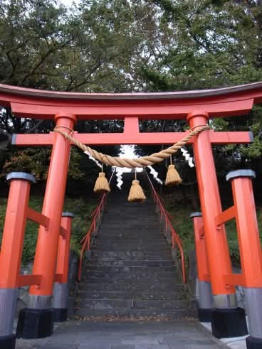

カーペット・ソファクリーニングに「浄化洗浄オプション」をスタートしました！運気が上がり、お部屋の波動が上昇する「イヤシロチ浄化洗浄クリーニング」をします！

イヤシロチ浄化クリーニングのご案内
カーペット・ソファお部屋の浄化クリーニング🔵運気を上昇させる
🔵イヤシロチ洗浄クリーニング
オプション5,000円
🟢浄化洗浄バキュームコーティング DAIZENの人気メニューカーペット・ソファの洗浄バキュームクリーニングに、オプションで浄化洗浄のコーティングをスタートしました。 DAIZENでは，ドイツ製専用リンサー機器と、同じくドイツ製専用薬剤にて、汚れをカプセル化して洗浄バキュームクリーニングを実施しておりますが、 このオプションでは、さらに浄化洗浄のコーティング専用薬剤を用いて、イヤシロチとよばれるレベルのクリーンな除菌コーティングを実施します。 ホームページのお問い合わせ画面電話にて、お問い合わせ、お申込みください。 カーペット・ソファ- 東京都港区のハウスクリーニングならDAIZENDAIZENのカーペット・ソファクリーニングのページです。ビル・オフィスで通常実施しているカーペットクリーニングメソッドに熟練しております。詳しくはこちらをご覧ください。リンクdaizen-clean.com DAIZENのカーペット・ソファクリーニング各種ファブリックのダニ除去・埃除去・におい除去・汚れ除去わんちゃん、猫ちゃん、その他特殊な汚れを除去し除菌消臭します。ペットのおしっこ汚れを専用洗剤と専用器具で熔解、揉み出し、吸引除去し、除菌消臭する徹底クリーニングです。犬猫その他ペットちゃんのおしっこ汚れの除去も多数実績がございます。カーペット内部汚物除去と除菌消臭は完全に実現しますがしみが薄く残るケースもございます、現地確認で合意の上実施いたします。イヤシロチ（弥盛地）とは、動物や植物が健康に育ち、人間の心身にも良い影響を与える「癒しの土地」のことです。古くから神社仏閣が建立されるような、空気が澄んでいて清々しい空間を指し、地中の電子が豊富でマイナスイオンが優位な「還元」環境が特徴です。対義語はケガレチ（気枯地）